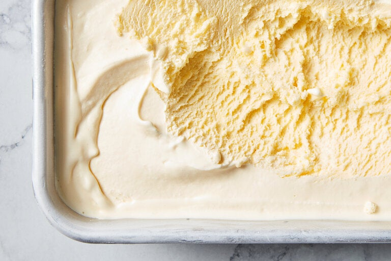

Ice-cream

Description
This silky, luscious and very classic custard can be used as the base for any ice cream flavor you can dream up. These particular proportions of milk and cream to egg yolk will give you a thick but not sticky ice cream that feels decadent but not heavy.
For something a little lighter, use more milk and less cream, as long as the dairy adds up to 3 cups. You can also cut down on egg yolks for a thinner base, but don’t go below three.
Ingredients
- heavy cream - 2 cups
- whole milk - 1 cup
- granulated sugar - ⅔ cup
- fine sea salt - ⅛ teaspoon
- large egg yolks - 6
- your choice of flavoring
Steps
- In a small pot, simmer heavy cream, milk, sugar and salt until sugar completely dissolves, about 5 minutes
- remove pot from heat
- in a separate bowl, whisk yolks
- whisking constantly, slowly whisk about a third of the hot cream into the yolks, then whisk the yolk mixture back into the pot with the cream
- return pot to medium-low heat and gently cook until mixture is thick enough to coat the back of a spoon (about 170 degrees on an instant-read thermometer)
- Strain through a fine-mesh sieve into a bowl
- cool mixture to room temperature
- cover and chill at least 4 hours or overnight
- churn in an ice cream machine according to manufacturers’ instructions
- serve directly from the machine for soft serve, or store in freezer until needed